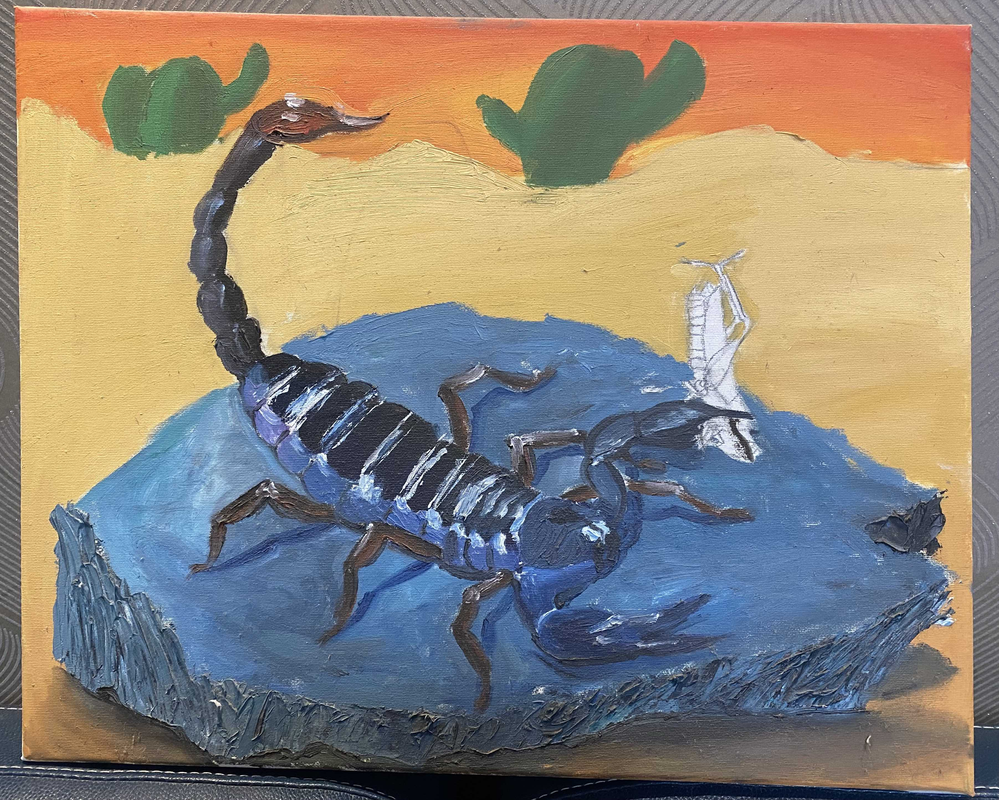
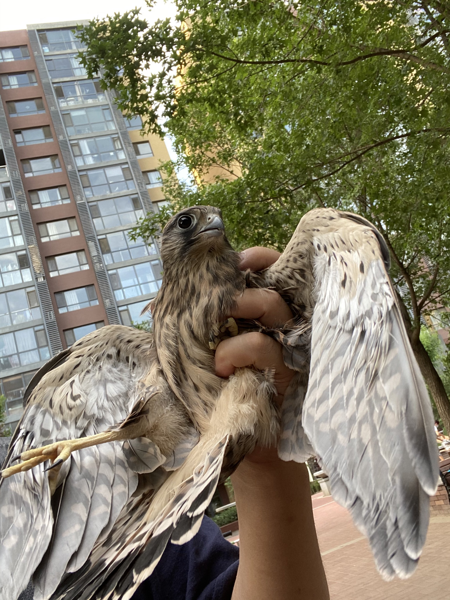
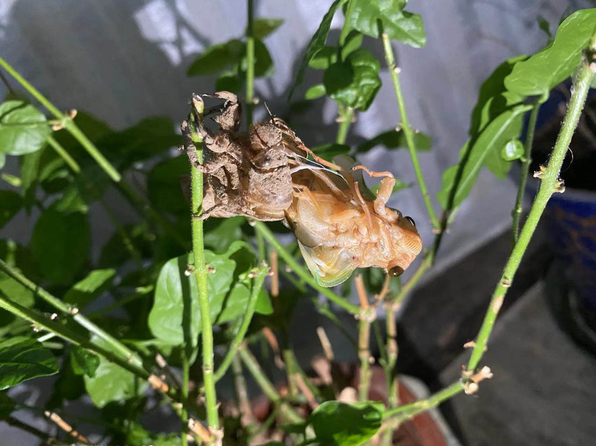
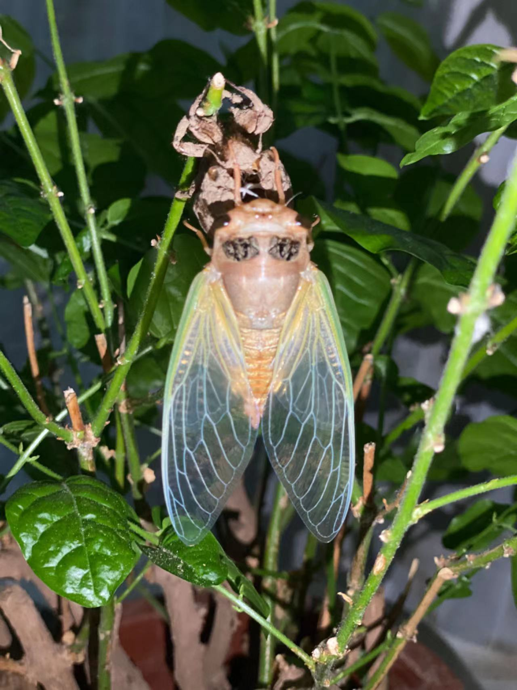
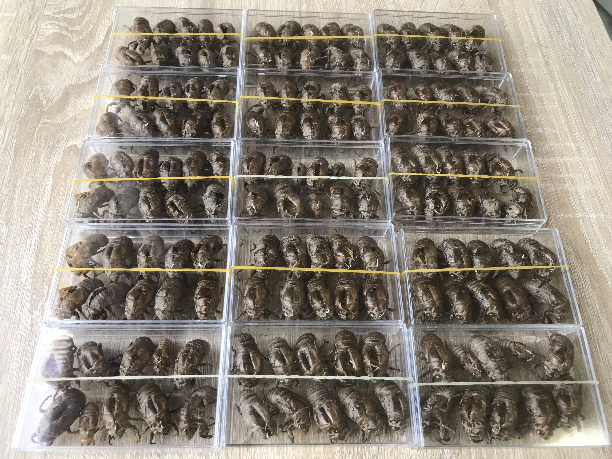
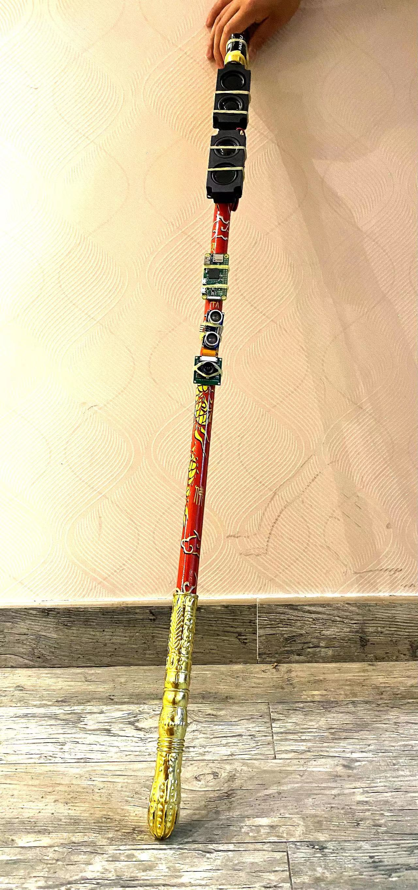
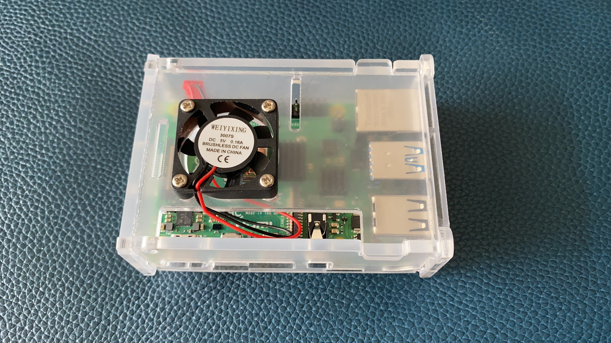
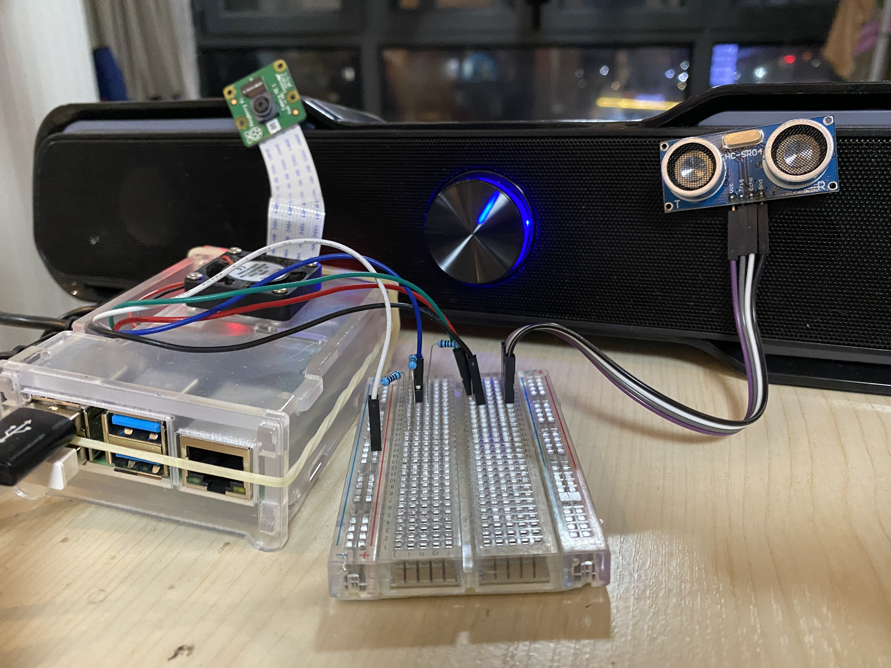
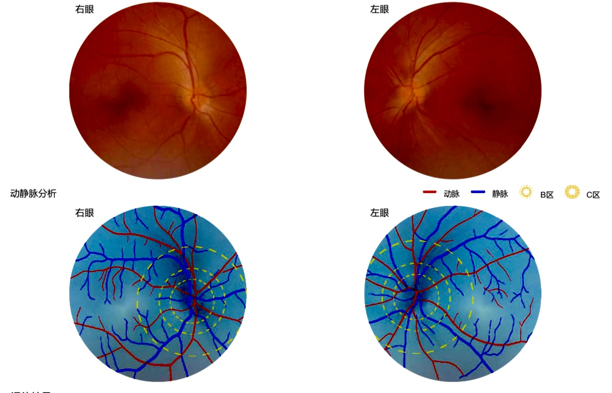
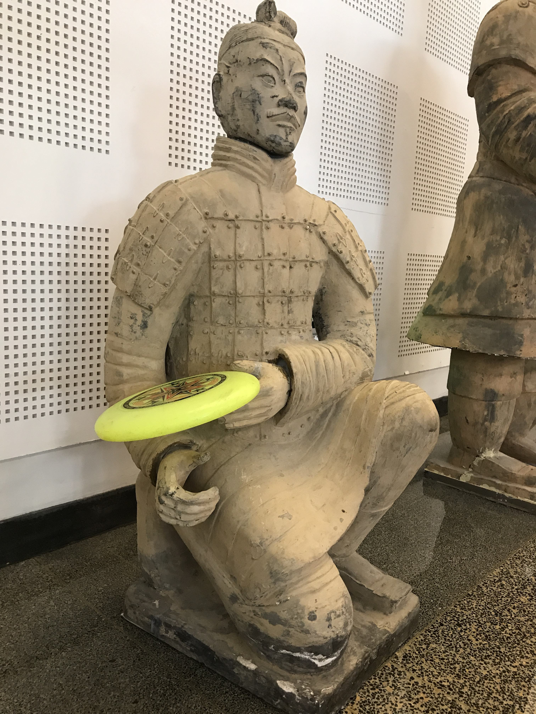

|
 |
Anthony Huang I was born in Seattle, WA. I moved with parents to Beijing at age of 2/3 :) |

after interrupting our nightly laser-tag game by stepping on my left foot. About a week later, while Mom took my brother and me for a walk after dinner, we saw it with two little baby porcupines playing near the bushes. I wondered what was going through her mind then seeing the trio of us :) The falcon on the right crash-landed by our dog and us while we were doing a casual walking. It was not as excited as we were about the unplanned meeting, I could tell. We kept it for about 4 hours, performed a physical exam on it, and released it back into the sky.Cicadas are cool musicians as each of them seems to sing a distinctive song. I have classified their melodies into six schools based on their differences in voices, tunes, lengths and styles :) They are also performing artists. This amigo on the left was doing an acrobatic sit-up

after emerging from the old exoskeleton, before it decided to tan its color from greenish to golden, and then to black (on the right).
On the lower left is my army of 150 cicada exoskeletons, which all look alike, but upon careful examination, each has quite different poses and looks. Don't they evoke the same sense of gravitas as that of the terra-cotta warriors? Can you tell a cicada's gender from its exoskeleton (shell)? Well, I can :)
I have had this natural curiosity since very young, probably under the influence of my father.Later on this natural curiosity has evolved into intellectual curiosity. For example, I once dove deep into the Robustness of CNNs to Test-Time Image Degradation on Fashion-MNIST and wrote up a report on it.
In addition, I like to create things. I once built among other things a turtle-walking harness that had allowed my pet turtle to play around freely in the pond while my brother and I easily tracked its whereabouts.
Over time, my curiosity and creativity have made me to become obsessed with AI and vision: human vision and computer vision. When volunteering to read for the blind kids at HongDanDan Charity Center for the Visually Impaired, I came to realize that the typical cane used by the blind is just dumb and at best a stiff extension to one's arms. Thus, it was natural for me to come up with the idea of a smart cane POC system in the Robotics class.

The ideal system should be able to "see" the approaching objects and "warn" the user, so a webcam and speakers were added. To complete the reflex arc, a "brain" was needed, therefore a Raspberry PI4B chip was installed, with Twister OS (a linux version for embedded systems).
But how to detect an approaching object's distance? Searching for something like a bat's echo-locator, I was pleased to find that ultrasonic sensors could work. But an ultrasonic sensor receives ECHOs at 3.5 volts, different than the chip's working voltage of 5.After some brainstorming, I designed a circuit to adjust the voltage using a breadboard and jumpers' approach.

Then a new problem came up: how to recognize a car's image as a car? After extensive research, I employed Google coco object model and tensorflow-lite to achieve that aim. Next, how to extract the webcam video frame at real-time? How to convert warning words to voices? Such problems surfaced one after another, all seeming invincible initially. With a trial-and-error approach, much learning, and many mini-innovations along, I was able to pull it off. The final system worked beautifully. Through this I have learned that creativity alone does not necessarily make me a successful innovator, and that it requires a chaperone named "hard work" to recruit good luck and serendipity.One of the key technologies used was AI driven object recognition from a real-time video frame.

My passion with AI and vision led me to AI medicine. I am doing an internship at the AI core team of Airdoc Corp., a pioneer in AI medicine, working on models to improve disease prediction precision based on retinal imaging. Our models help predict dozens of diseases including diabetes, glaucoma, AMD, dementia, and infarctions. My IB Extended Essay is about comparing different loss functions on retinal machine learning.

Wherever I go, I always carry a frisbee. When hanging out, it often assures a fun ultimate game; when hiking, it is the designated water tray for my dog; when in the woods, it becomes my power shield; when napping, it is my sleepy pillow; when debugging code, it is the preferred mouse pad as it helps me focus better:) A member of my high school's swimming team, I also love American Football, Ping-pong, Basketball and Badminton.